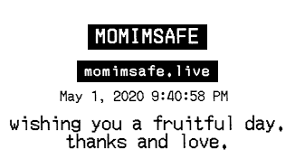

receipts, courtesy Amay Kataria
momimsafe is an active live-stream of my home studio space, where I spend the majority of my time in this post-covid era. It was developed in response to the COVID19 lockdown, with an urgent need in mind; to be visually and physically accessible to all my friends and family globally; especially my mom, who has been concerned about my safety and health during this time. It's a twisted take on communication, which is personal and can exist for an unrestricted period of time. To bridge your virtual space with my physical space, you can send me messages that are archived and printed in my space in real-time.
embedded live feed, courtesy Amay Kataria
When I reflect back on what persuaded me to create this work after the lockdown was initiated, I believe it was driven by an increased sense of care and affection for my loved ones. I imagined about creating an alternate form of communication between us that was more personal and could exist for an extended period of time. I departed from the traditional face to face conversation format to a surveillance model, which put my personal space and privacy at stake to ensure that my loved ones are not worried about me. Wherever they are in the world, whatever timezone they are in, they can feel connected to me at any time. Thus, it begs the question, how justified is an increase in surveillance, when it’s meant to achieve some greater good?
I also look at this work as an alternate performative space that would have never sprung up if the world was not going through this situation. This space is filled with mundane tasks that echo an acceptance of the current situation with resilience and patience.
While trying to blur the line between virtual and the physical world, I departed from the oversaturated nature of digital messaging to an alternate communication model with receipt printers. This really helped participants transcend from their virtual to my physical space. To achieve that, I developed a system that could let them send messages on the website, that get printed physically in my personal space in real-time. Occassionally, I catch these messages getting printed and acknowledge them by waving back at the camera. These messages are stored in a database as an archive for the future to reflect back on the crisis and embrace the love and care of my friends and family that helped me thrive through these times.
In the future, I can imagine a network of receipt printers to create a new form of social communication, where the intention would be to leave messages as a poetic gesture to occupy space and create memory in the physical space of our loved ones.
I also look at this work as an alternate performative space that would have never sprung up if the world was not going through this situation. This space is filled with mundane tasks that echo an acceptance of the current situation with resilience and patience.
While trying to blur the line between virtual and the physical world, I departed from the oversaturated nature of digital messaging to an alternate communication model with receipt printers. This really helped participants transcend from their virtual to my physical space. To achieve that, I developed a system that could let them send messages on the website, that get printed physically in my personal space in real-time. Occassionally, I catch these messages getting printed and acknowledge them by waving back at the camera. These messages are stored in a database as an archive for the future to reflect back on the crisis and embrace the love and care of my friends and family that helped me thrive through these times.
In the future, I can imagine a network of receipt printers to create a new form of social communication, where the intention would be to leave messages as a poetic gesture to occupy space and create memory in the physical space of our loved ones.


receipts, courtesy Amay Kataria